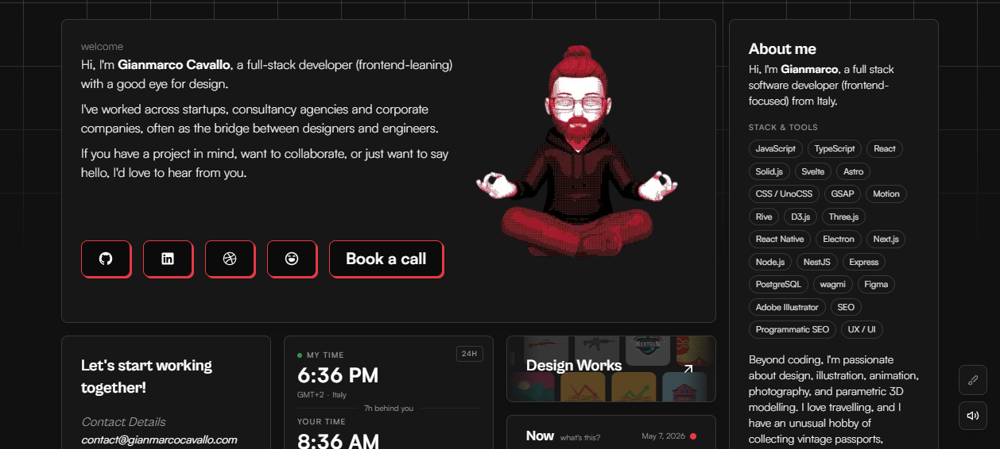

Visual UI Design
Layout is the argument. Everything else is decoration.
Where things sit, how big they are, and how much air surrounds them decides what a visitor understands before they read a word. This page distills how 80 elite sites build grids, bento mosaics, hierarchy, rhythm and density — with the exact techniques, lifted from teardowns.
1 · Pick a layout system (and commit)
Almost every elite site resolves to one of four spatial skeletons. The craft is not inventing a fifth — it is picking one and executing it ruthlessly.
- Centered reading column. A constrained max-width on a quiet canvas with deep gutters. Stripe runs a ~1080px column on white; Linear ~1100–1200px on near-black; Family ~1160px with very wide side gutters that keep everything in a relaxed reading lane.
- Hard modular grid. Visible 1px rules form literal cells. Vercel's "Your product, delivered." section is a literal 3-column × 2-row ruled grid — the blueprint metaphor is the design.
- Bento mosaic. Rounded cards of varying span on one field. Ramp, Gianmarco Cavallo and Framer (its "Bento" shipping card) all lean on this.
- Split / asymmetric. A fixed identity rail beside scrolling content. Brittany Chiang pins name + nav on the left while the right column scrolls; 14islands deliberately imbalances a giant left headline against a tiny right intro paragraph.
The decision rule. Marketing narrative that must be read top-to-bottom → centered column (Stripe, Linear, Family). Capability matrix where blocks are peers, scanned not read → modular grid or bento (Vercel, Ramp). A personal identity that must stay present → split-screen (Brittany Chiang). Don't mix two skeletons in one viewport.

2 · The modular grid & the 8pt rhythm
A grid is two things: a set of columns (horizontal alignment) and a spacing scale (vertical and gutter rhythm). The sites that feel "tight" share one trait — every gap is a multiple of a base unit, usually 4 or 8px. shared.css itself ships an 8pt-ish scale (--s-1: .25rem → --s-9: 6rem); this is not decoration, it is the load-bearing system.
Modern CSS gives you the whole grid in a few declarations. The pattern below is the responsive "cells without media queries" technique — the same one Vercel and Stripe use for solution-card rows:
/* Responsive card grid — no media queries needed.
Cells auto-flow; each is at least 260px, sharing leftover space. */
.grid {
display: grid;
grid-template-columns: repeat(auto-fit, minmax(min(100%, 260px), 1fr));
gap: var(--s-5); /* 1.5rem — on the 8pt scale */
}
/* A *hard-ruled* modular grid à la Vercel:
draw the cell lines with a single background, no per-cell borders. */
.ruled {
display: grid;
grid-template-columns: repeat(3, 1fr);
gap: 1px; /* the gap *is* the rule */
background: var(--line); /* shows through the gap */
}
.ruled > * { background: var(--bg); padding: var(--s-6); }A 4-column grid where three cells span to break the monotony — the seed of a bento. Resize the window: it reflows to 2 columns under 560px.
grid-column: span 2 / grid-row: span 2 on selected children. This is the entire mechanical trick behind a bento.Vertical rhythm: snap text to a baseline
The reason Josh Comeau and Stripe Press feel "magazine-spaced" is that vertical gaps are quantised. Set line-heights and margins to multiples of one unit so successive lines land on an invisible baseline.
Lovable products, from vision to launch
Every line of text here sits on an 8px baseline. The heading, the paragraph, and the gaps between them are all multiples of the same unit.
When the baseline overlay is on, you can see each line snap to a rule. This is why disciplined pages feel calm — nothing floats off-grid.
Use exactly one spacing scale per project and reference it by token, never by raw pixels in components. shared.css does this: a card pads with var(--s-5), a callout with var(--s-4) var(--s-5). When every gap is a token, "off-by-3px" drift becomes impossible.
3 · Bento: density variety in a single mosaic
The bento grid is the dominant 2024–2026 layout for "show many capabilities at once." Its power is density variety — big calm cards next to small dense ones inside one tidy frame. The teardowns are explicit about this:
- Ramp — a bento grid the studio (Bakken & Baeck) literally nicknamed "the Bento box," deliberately mixing low-density abstract cards with high-density UI screenshots. The variety is the point.
- Stripe — bento-style card grids for solutions: gradient-tinted product mockup cards (checkout UI, card issuing, agentic-commerce chat) sitting above descriptive cards.
- Arc Browser — a single bento mockup grid used as the "densest moment" on an otherwise airy page, deployed deliberately as the product reveal.
- Gianmarco Cavallo — the whole page is a bento: bio card, dual world-clock card, gallery, "Now", "Guestbook", each with a small ↗ corner arrow signalling "this is a link."
- Framer — even ships a feature literally named "Bento," and its shipping-log grid is a dense bento of "Live" cards (Shaders, CMS 3.0, Auto Translate).

/* A robust dense-but-legible bento.
auto-flow: dense backfills holes left by spanning cards. */
.bento {
display: grid;
grid-template-columns: repeat(4, 1fr);
grid-auto-rows: minmax(120px, auto);
grid-auto-flow: dense;
gap: var(--s-4);
}
.bento .feature { grid-column: span 2; grid-row: span 2; } /* hero card */
.bento .wide { grid-column: span 2; } /* banner */
.bento .tall { grid-row: span 2; } /* sidebar */
/* Every card: identical padding + radius = the "tidy" feeling */
.bento > * {
padding: var(--s-5);
border: 1px solid var(--line);
border-radius: var(--r-3);
background: var(--bg-3);
}Bento pitfalls. (1) Uniform density — if every card holds the same amount, it's just a boring grid; the variety is the value. (2) Reading order chaos — grid-auto-flow: dense can make visual order diverge from DOM order, which hurts screen-reader and keyboard users. Keep the DOM in logical reading order and only let dense backfill small holes. (3) Span soup at mobile — collapse most spans to full-width below ~560px (see the live demo above) or the mosaic shatters.
4 · Hierarchy: size, weight, position
Hierarchy is how a layout tells the eye "this first, that second." The elite sites build it with three levers — size, weight/contrast, and position — and a clean semantic heading map underneath.
- Semantic map = visual map. Apple's homepage is a textbook:
h1"Apple" (visually-hidden brand anchor),h2for marquee products (iPhone 17 Pro),h3for secondary tiles (MacBook Air, Apple Watch). The DOM outline reads like the page looks. - Size as tiering. 14islands tiers projects purely by heading level + thumbnail size — a featured 2-column case-study grid (large thumbs) over a denser overflow list (
h3rows). No badges, no "featured" labels; scale alone does the work. - Weight contrast inside one phrase. 14islands again: "Lovable Products" rendered half light-grey, half near-black to emphasise within a single line. Ramp lets full-width statement lines carry the page ("Systems that never spoke") — copy as the heaviest element.
- Position = importance. Ramp's hero is left-aligned with a tiny eyebrow stat above a giant H1; Rauno Freiberg goes loud-per-panel: one giant word per card in a horizontal filmstrip, sparse overall.
Steal: the eyebrow → headline → subhead → single CTA unit. Vercel repeats exactly this grammar in every grid cell, and Josh Comeau introduces every homepage section with a small uppercase eyebrow label (ARTICLES AND TUTORIALS, POPULAR CONTENT). One repeated 4-part unit gives a whole page rhythm for free.
5 · Whitespace & density as a dial
The most repeated phrase across the teardowns is "density is deliberately low." But the masters don't keep it low — they modulate it. Whitespace is a dial you turn down to create a deliberate spike where it matters.
- Family — each feature is its own full "act" separated by hairline dividers and large vertical padding, then "Friends of Family" is a dense masonry/marquee wall of real tweets: a deliberate density spike after all the air, which makes social proof feel abundant.
- Linear — sparse marketing copy, but the embedded app mockups are intentionally dense to signal product depth. Air around the words, density inside the product.
- Framer — "alternating breathing room and dense proof": one headline owns the viewport up top; the shipping-log grid packs in downward.
- Arc Browser — low-to-medium overall, with the bento mockup grid as the single densest, most deliberate moment.
--pad) on the container. Comfortable for marketing/scan; compact for power-user data (a Linear/Mercury dashboard move).Drive density from a single custom property, not by editing each row. One --pad / --gap on a parent lets a whole table flip between "marketing comfortable" and "operator compact" — and animates smoothly. Mercury and Linear both keep low density per marketing scene but pack their dashboard mockups full.
6 · Component composition & repeated grammar
Pages that feel "designed" reuse a small vocabulary of blocks. The teardowns call this out as repeated component grammar:
- Vercel — "Repeated component grammar: heading → short subhead → single CTA/arrow → embedded mini product demo. This template repeats down the page." One block, instantiated many times.
- Family — alternating left-text / right-phone-mockup for deep features: a predictable scan pattern that still breaks monotony by flipping sides.
- Mercury — a sticky/pinned accordion of product pillars paired with a live dashboard mockup on the right that swaps as you expand each item: one composition, four contents.
- Linear — each capability section pairs a large H2 with an interactive demo panel; numbered chapters (1.0–5.0) give the repetition a spine.
<!-- One "capability block" component, reused down the page.
Same grammar as Vercel: title -> subhead -> CTA -> artifact. -->
<section class="cap">
<div class="cap__copy">
<h2>{{ title }}</h2>
<p class="lede">{{ subhead }}</p>
<a class="cta" href="{{ href }}">Learn more →</a>
</div>
<figure class="cap__demo">{{ productMockup }}</figure>
</section>
<style>
.cap { display: grid; gap: var(--s-6); align-items: center; }
/* flip sides on alternate instances — the Family move */
.cap:nth-of-type(even) .cap__demo { order: -1; }
@media (min-width: 760px) { .cap { grid-template-columns: 1fr 1fr; } }
</style>Steal: define 3–5 block types, then compose the whole page from them. A capability block, a logo wall, a stat band, a quote carousel, a CTA scene. Stripe and Linear both build entire long-scroll narratives from roughly this set. Fewer block types → stronger rhythm and far cheaper maintenance.
7 · Alignment, asymmetry & the optical edge
Alignment is the cheapest way to look intentional — a shared left edge does more for perceived quality than any gradient. But the best sites also know when to break it.
- Asymmetry as signature. 14islands splits the hero into a giant left headline vs. a small right intro paragraph — "this deliberate imbalance is a signature." Tension, on purpose.
- A fixed alignment anchor. Brittany Chiang keeps a sticky left identity column while content scrolls past; the pinned edge is the page's backbone. Framer uses sticky left-rail labels (AI / Design / CMS) against right-side visuals.
- Two-sub-column rows. Brittany Chiang's Experience/Writing entries: muted date range on the left, title + description + tech pills on the right — a tiny internal grid repeated per row reads as effortless order.
- Negative space as the layout. Rauno Freiberg — "the negative space is the layout": generous grey gutters between cards in a horizontal filmstrip, loud per-panel but sparse overall.
Centered-everything is the amateur tell. Centering a whole column of left-to-right text creates ragged left edges the eye can't anchor to. Center hero headlines and CTAs (Apple, Arc, Mercury all do); left-align body copy, lists, and any multi-line content. And remember optical alignment beats mathematical: a circular arrow button or a piece of punctuation often needs a 1–2px nudge to look aligned even when the box is centered.
8 · The mega-footer: where density is allowed
One striking pattern: airy pages end in dense footers, and that's correct. The footer is the one zone where high link-density signals depth and trust rather than clutter — users arrive there deliberately, ready to hunt.
- Stripe — a dense multi-column sitemap (Products / Solutions / Use cases / Developers / Resources / Company): "classic enterprise breadth, but visually quiet."
- Linear — a 5-column sitemap + legal row, explicitly "the densest block on the page."
- Framer — a "fat sitemap, 77 links," organised Product / Resources / Community / Company.
- Mercury — an unusually long, link-rich legal/footnotes block (every yield/cashback claim superscript-footnoted) — density driven by regulation, anchored at the bottom on purpose.
The lesson: don't spread that link density up the page to "fill space." Concentrate it where intent is highest — the footer — and keep the body breathing. shared.css's own .ftr follows this: quiet styling, multi-column tolerance, anchored at the very bottom.
9 · Steal-this checklist
System
Pick ONE skeleton per viewport: centered column, hard grid, bento, or split. Never blend two. (Stripe / Vercel / Ramp / Brittany Chiang.)
Scale
One 4/8pt spacing scale, referenced by token everywhere. Every gap a multiple. Off-grid drift becomes impossible.
Bento
Vary density across cards (the point), keep DOM in reading order, collapse spans to full-width on mobile. (Ramp / Gianmarco.)
Hierarchy
Semantic heading map = visual map. Tier with size + weight + position, not badges. (Apple / 14islands.)
Density dial
Low overall, one deliberate spike where proof lives. Drive it from a single CSS variable. (Family / Linear / Mercury.)
Grammar
Define 3–5 block types; compose the whole page from them. Repetition = rhythm + cheap maintenance. (Vercel / Stripe.)
Layout is invisible when it works. If a visitor never notices the grid, the rhythm, or the spacing scale — only that the page felt calm, clear, and easy to scan — every principle above did its job.